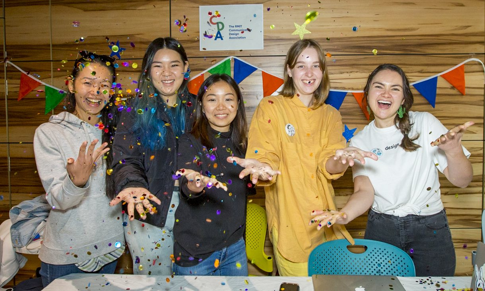

With hundreds and thousands of clubs and societies, there is bound to be something for you! Joining one comes with heaps of benefits too!
Make friends!
Joining a club allows you to meet new and like-minded people who live or work in the same general area, or share similar interests.
Take a break from studies!
Taking a break and being a different environment that a club or society provides you with can be healthy. It gives your brain a chance to recharge and helps you de-stress.
Build skills and develop a professional network!
Being in a club provides you with new learning opportunities, helping you develop skills that will make you workforce ready and look great on your resume.
Discover new interests and hobbies!
Trying unfamiliar things and being open to new experiences can spark your interests and encourage you to follow any passion towards a new hobby!